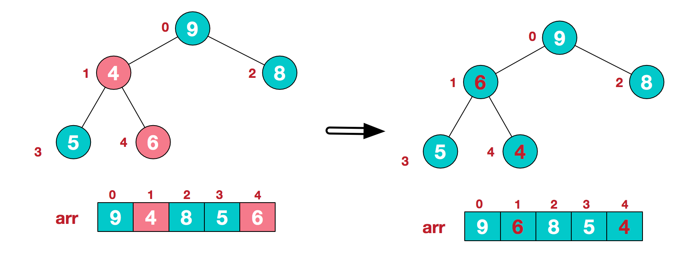

二叉树
首先在有序的数组中，可以快速的找到特定的值，但是如果插入一条新数据，就必须找到插入的位置,然后将比新数据项大的数据项向后移动一位，来给新的数据项腾出空间，删除也是，这样移动很是费时，显而易见，如果要做很多的插入和删除的操作，就不应该用有序的数组。
另外一方面，链表中可以快速的添加和删除某个数据项，但是在链表中查找数据项可不容易，必须从头开始访问链表的每一数据项，知道知道该数据项为止，这个过程很慢
树这种结构，既能像链表那样快速的插入和删除，又能快速的查找；
实现一种特殊的树，二叉（搜索）树；
特点
1.插入：一个节点的左叶子节点的关键字值小于这个节点，右子节点的关键字值大于或等于这个节点。
2.删除：删除节点要从过年查找要删除的节点开始入手，首先找到节点，这个要删除的节点可能有以下三种情况需要考虑（
* 该节点是叶节点，没有子节点
* 该节点有一个子节点
* 该节点有两个子节点
）
性质
关于二叉树，包含的一些性质
- 在二叉树中，第i层上至多有2i-1 个节点 （i>=1）
- 深度为k多二叉树最多有2k-1 -1个节点 （k>=1）
- 具有n个节点的完全二叉树的深度为log2n + 1
存储结构
graph TD
A[8] --> B[3]
A[8] --> C[10]
B[3] --> d[1]
B[3] --> e[6]
C[10] --> f[no]
C[10] --> kl[14]
e --> g[4]
e --> m[7]
kl --> k[13]
kl --> kn[no]
d[1] --> hj[no]
d[1] --> hj2[no]
上面的完全二叉树对应存储结构有两种：
1.顺序存储结构
2.链式存储结构
1.首先来说，顺序存储结构
| 8 | 3 | 10 | 1 | 6 | ^ | 14 | ^ | ^ | 4 | 7 | 13 | ^ |
|---|
在顺序存储结构中，^ 表示的是没有节点，从顺序存储可以看出，若出现大量^ ， 则对空间是一种极大的浪费。
2.在二叉树中，每一个节点至多存在左右子树上，因此在链式存储结构中，每一节点的结构为
| left_child | data | right_child |
|---|
其中data为数据域，left_child和right_child称为指阵域，分别指向左孩子和右孩子。
typedef struct Node
{
int data;//数据域的值
struct Node *left;//左孩子
struct Node *right;//右孩子
}
遍历
- 前序遍历 (8 3 1 6 4 7 10 14 13)
- 中序遍历 (1 3 4 6 7 8 10 13 14)
- 后序遍历 (1 4 7 6 3 13 14 10 8)
- 层次遍历 (8 3 10 1 6 14 4 7 13)
前序遍历，首先遍历根节点，其次遍历左孩子，再遍历右孩子
void pre_traversal(Node *p)
{
if (p != null)
{
printf("%d\t",p->data);
pre_traversal(p->left);
prt_rraversal(p->right);
}
}
中序遍历，首先遍历左子树，其次遍历父节点，最后遍历右子树
void mid_traversal(Node *p)
{
if (p != null)
{
mid_traversal(p->left);
printf("%d\t",p->data);
mid_traversal(p->right);
}
}
后序遍历，先遍历左子，其次是右子树，最后是父节点
void last_traversal(Node *p)
{
if (p != null)
{
last_traversal(p->left);
last_traversal(p->right);
printf("%d\t",p->data);
}
}
层次遍历，需要使用链表存储每一层的节点，同时遍历完一个节点，将其左右节点增加链表中
void lever_traversal(Node *p)
{
// 使用队列
list<Node *> t;
if (p != null)
{
t.push_back(p);
}
while (t.size > 0)
{
printf("%d\t",(t.front())->data);
if ((t.front())->left != null)
{
t.push_back((t.front())->left);
}
if ((t.front())->right != null)
{
t.push_back((t.front())->right);
}
t.pop_front();
}
}
二叉树的基础
创建二叉排序树
首先要了解二叉树的4种遍历的方式（前序，中序，后序，层次）
递归方式的创建
- 1.按照层次的方式创建
Node* createTreeWithValues(int *values , int n , const int LEN)
{
//给一个终止的条件
if (n >= LEN)
{
return NULL;
}
else
{
Node *preNode = new Node();
preNode->data = values[n];
preNode->left = createTreeWithValues(values , 2*n+1, LEN);
preNode->right = createTreeWithValues(values , 2*n+2 ,LEN);
return preNode;
}
}
- 2.根据有序的数组，创建一个基于中间值的分割树左小，右边大
void createTreeWithValues(Node *&pRoot, int *values , int start , int end)
{
if (start > end)
{
return;
}
int mid = start + (end-start)/2;
pRoot = new Node();
pRoot->data = values[mid];
createTreeWithValues(pRoot->left, values, start,mid-1);
createTreeWithValues(pRoot->right, values, mid+1, end);
return pRoot;
}
- 3.根据一个无序的数组，创建一个有序的二叉树，满足的条件是（左<根,根<右）
Node* createTree()
{
int values [10] = {8,3,2,1,6,14,4,7,13,15};
int len = sizof(values)/sizof(values[0]);
Node *root = NULL;
for (int i = 0;i < len; i++)
{
root = addTreeNode(root,values[i]);
}
return root;
}
Node * addTreeNode(Node *root, int value)
{
if(root == NULL)
{
root = new Node();
root->data = value;
}else{
if (value < root->data)
{
root->left = addTreeNode(root->left,value);
}
if (value > root->data)
{
root->right = addTreeNode(root->right,value);
}
}
return root;
}
- 4.根据一个数组，创建一个二叉树，使得所有的元素值存放在叶子节点上
//获取总节点数
int allTotal(int n)
{
if (pow(2,n-1) > 8) {
return 0;
}
return pow(2,n-1) + allTotal(n+1);
}
//创建一个树
Node * createMerkleTree()
{
int values [8] = {8,3,2,1,6,14,4,7};
int len = sizeof(values)/sizeof(values[0]);
int allK = allTotal(0);
Node *leafs[allK];
Node *root = NULL;
for (int i = 0;i < allK; i++)
{
Node *leafNode = new Node();
if (i < allK-len) {
leafNode->data = NULL;
}else{
leafNode->data = values[i-(allK-len)];
}
leafs[i] = leafNode;
}
//2n+1,为左叶子节点，2n+2,为右叶子节点
for(int i = 0; i < (allK)/2; i++)
{
if (2*i+1 < allK)
{
leafs[i]->left = leafs[2*i+1];
}
if (2*i+2 < allK)
{
leafs[i]->right = leafs[2*i+2];
}
}
root = leafs[0];
return root;
}
非递归方式的创建
- 1.按照层次的遍历的思路进行创建
Node * createTreeWithValues(int *values, int len)
{
Node *pNodes[len];
for (int i = 0; i < len; i++)
{
Node *preNode = new Node();
preNode->data = values[i];
pNodes[i] = preNode;
}
//首先考虑的是将数组一分为2
//2n+1,为左叶子节点，2n+2,为右叶子节点
for(int i = 0; i < len/2; i++)
{
if (2*i+1 < len)
{
pNodes[i]->left = pNodes[2*i+1];
}
if (2*i+2 < len)
{
pNodes[i]->right = pNodes[2*i+2];
}
}
return pNodes[0];
}
二叉树中某个位置的节点
类似索引操作，按层次遍历，位置从0开始计算，从左到右边
Node* findIndexNode(Node *p , int index)
{
if (index == 0) return p;
std::queue<Node *> queueList;
queueList.push(p);
while (!queueList.empty())
{
index--;
Node *preNode = queueList.front();
queueList.pop();
if (index == 0)
{
return preNode;
}
if (preNode->left)
{
queueList.push(preNode->left);
}
if (preNode->right)
{
queueList.push(preNode->right);
}
}
return NULL;
}
常见题目
求二叉树中的节点个数
递归解法：
1.如果二叉树为空，节点个数为0
2.如果二叉树不为空，节点个数 = 左子树叶子个数 + 右子树叶子个数
int count = 0;
void GetNodeNum(Node *p, int count)
{
if (p == NULL)// 递归出口
{
return;
}
GetNodeNum(p->left);
GetNodeNum(p->right);
count++;
}
int GetNodeNum(Node *p)
{
if (p == NULL)// 递归出口
{
return 0;
}
return 1 + GetNodeNum(p->left) + GetNodeNum(p->right);
}
求二叉树中的深度
递归解法：
1.如果二叉树为空，深度为0
2.如果二叉树不为空，二叉树的深度 = max（左子树深度， 右子树深度） + 1
int GetDepth(Node *p)
{
if (p == NULL)
{
return 0;
}
int depthLeft = GetDepth(p->left);
int depthRight = GetDepth(p->right);
return depthLeft > depthRight ? (depthLeft + 1) : (depthRight + 1);
}
前序遍历，中序遍历，后续遍历
分层遍历二叉树（按层次从上往下，从左边往右）
将二叉树查找树变为有序的双向链表
堆排序
https://www.cnblogs.com/chengxiao/p/6129630.html
我们知道堆的结构是节点i的孩子为2 * i和2 * i + 1节点，大顶堆要求父节点大于等于其2个子节点，小顶堆要求父节点小于等于其2个子节点。在一个长为n 的序列，堆排序的过程是从第n / 2开始和其子节点共3个值选择最大（大顶堆）或者最小（小顶堆），这3个元素之间的选择当然不会破坏稳定性。但当为n / 2 - 1， n / 2 - 2， ... 1这些个父节点选择元素时，就会破坏稳定性。有可能第n / 2个父节点交换把后面一个元素交换过去了，而第n / 2 - 1个父节点把后面一个相同的元素没 有交换，那么这2个相同的元素之间的稳定性就被破坏了。所以，堆排序不是稳定的排序算法。
堆排序的思想
堆排序是利用堆这种数据结构而设计的一种排序算法，堆排序是一种选择排序，它的最坏，最好，平均时间复杂度均为O(nlogn)，它也是不稳定排序。首先简单了解下堆结构。
堆是具有以下性质的完全二叉树：每个结点的值都大于或等于其左右孩子结点的值，称为大顶堆；或者每个结点的值都小于或等于其左右孩子结点的值，称为小顶堆。如下图：

大顶堆：arr[i] >= arr[2i+1] && arr[i] >= arr[2i+2]
小顶堆：arr[i] <= arr[2i+1] && arr[i] <= arr[2i+2]
将待排序序列构造成一个大顶堆，此时，整个序列的最大值就是堆顶的根节点。将其与末尾元素进行交换，此时末尾就为最大值。然后将剩余n-1个元素重新构造成一个堆，这样会得到n个元素的次小值。如此反复执行，便能得到一个有序序列了
实例分析
- 构造一个初始堆，将给定无序序列构造一个大顶堆（一般升序采用大顶堆，降序采用小顶堆）

2.此时，从最后一个非叶子节点开始（叶节点自然不用调整，第一个非叶子节点arr.len/2-1 = 5/2-1=1,也就是6节点，从左至右，从下至上进行调整）

3.找到第二个非叶节点4，由于[4,9,8]中9元素最大，4和9交换。

4.交换导致了子根[4,5,6]结构混乱，继续调整，[4,5,6]中6最大，交换4和6。

再简单总结下堆排序的基本思路：
a.将无需序列构建成一个堆，根据升序降序需求选择大顶堆或小顶堆;
b.将堆顶元素与末尾元素交换，将最大元素"沉"到数组末端;
c.重新调整结构，使其满足堆定义，然后继续交换堆顶元素与当前末尾元素，反复执行调整+交换步骤，直到整个序列有序。
代码实现

【TOP K问题】
如何从100万个数中找出最大的前100个数
根据快速排序的划分思想
最小堆的处理思路
先取出前100个数，维护一个100个数的最小堆，然后再遍历剩余的元素
（或者说是假设数组arr保存100个数字，首先取前100个数字放入数组arr中，对于第101个数子k，如果k大于arr中的最小，则用k替换最小数，然后依次对剩下的数字进行这种处理）
实现思路
1.step1：取前m个元素（例如m=100），建立一个小顶堆。保持一个小顶堆得性质的步骤，运行时间为O（lgm);建立一个小顶堆运行时间为m*O（lgm）=O(m lgm);
2.step2:顺序读取后续元素，直到结束。每次读取一个元素，如果该元素比堆顶元素小，直接丢弃
如果大于堆顶元素，则用该元素替换堆顶元素，然后保持最小堆性质。最坏情况是每次都需要替换掉堆顶的最小元素，因此需要维护堆的代价为(N-m)*O(lgm);
最后这个堆中的元素就是前最大的10W个。时间复杂度为O(N lgm）。
分块查找
先把100w个数分成100份，每份1w个数。先分别找出每1w个数里面的最大的数，然后比较。找出100个最大的数中的最大的数和最小的数，取最大数的这组的第二大的数，与最小的数比较。。。。
也有很大的意义。如果不分块，相当于对100亿个数字遍历，作比较。这中间存在大量的没有必要的比较。可以举个例子说明，全校高一有100个班，我想找出全校前10名的同学，很傻的办法就是，把高一100个班的同学成绩都取出来，作比较，这个比较数据量太大了。应该很容易想到，班里的第11名，不可能是全校的前10名。也就是说，不是班里的前10名，就不可能是全校的前10名。因此，只需要把每个班里的前10取出来，作比较就行了，这样比较的数据量就大大地减少了。
10亿个数中找出最大的10000个数
https://blog.csdn.net/zyq522376829/article/details/47686867?utm_source=blogxgwz0
常见的排序算法
https://www.cnblogs.com/eniac12/p/5329396.html#s12
回到主题，现在分析一下常见的排序算法的稳定性，每个都给出简单的理由。
(1)冒泡排序
冒泡排序就是把小的元素往前调或者把大的元素往后调。比较是相邻的两个元素比较，交换也发生在这两个元素之间。所以，如果两个元素相等，我想你是不会再无聊地把他们俩交换一下的；如果两个相等的元素没有相邻，那么即使通过前面的两两交换把两个相邻起来，这时候也不会交换，所以相同元素的前后顺序并没有改变，所以冒泡排序是一种稳定排序算法。
(2)选择排序
选择排序是给每个位置选择当前元素最小的，比如给第一个位置选择最小的，在剩余元素里面给第二个元素选择第二小的，依次类推，直到第n - 1个元素，第n个元素不用选择了，因为只剩下它一个最大的元素了。那么，在一趟选择，如果当前元素比一个元素小，而该小的元素又出现在一个和当前元素相等的元素后面，那么交换后稳定性就被破坏了。比较拗口，举个例子，序列5 8 5 2 9，我们知道第一遍选择第1个元素5会和2交换，那么原序列中2个5的相对前后顺序就被破坏了，所以选择排序不是一个稳定的排序算法。
(3)插入排序
插入排序是在一个已经有序的小序列的基础上，一次插入一个元素。当然，刚开始这个有序的小序列只有1个元素，就是第一个元素。比较是从有序序列的末尾开始，也就是想要插入的元素和已经有序的最大者开始比起，如果比它大则直接插入在其后面，否则一直往前找直到找到它该插入的位置。如果碰见一个和插入元素相等的，那么插入元素把想插入的元素放在相等元素的后面。所以，相等元素的前后顺序没有改变，从原无序序列出去的顺序就是排好序后的顺序，所以插入排序是稳定的。
(4)快速排序
快速排序有两个方向，左边的i下标一直往右走，当a[i] <= a[center_index]，其中center_index是中枢元素的数组下标，一般取为数组第0个元素。而右边的j下标一直往左走，当a[j] > a[center_index]。如果i和j都走不动了，i <= j，交换a[i]和a[j],重复上面的过程，直到i > j。 交换a[j]和a[center_index]，完成一趟快速排序。在中枢元素和a[j]交换的时候，很有可能把前面的元素的稳定性打乱，比如序列为5 3 3 4 3 8 9 10 11，现在中枢元素5和3（第5个元素，下标从1开始计）交换就会把元素3的稳定性打乱，所以快速排序是一个不稳定的排序算法，不稳定发生在中枢元素和a[j] 交换的时刻。
(5)归并排序
归并排序是把序列递归地分成短序列，递归出口是短序列只有1个元素（认为直接有序）或者2个序列（1次比较和交换），然后把各个有序的段序列合并成一个有序的长序列，不断合并直到原序列全部排好序。可以发现，在1个或2个元素时，1个元素不会交换，2个元素如果大小相等也没有人故意交换，这不会破坏稳定性。那么，在短的有序序列合并的过程中，稳定是是否受到破坏？没有，合并过程中我们可以保证如果两个当前元素相等时，我们把处在前面的序列的元素保存在结果序列的前面，这样就保证了稳定性。所以，归并排序也是稳定的排序算法。
(6)基数排序
基数排序是按照低位先排序，然后收集；再按照高位排序，然后再收集；依次类推，直到最高位。有时候有些属性是有优先级顺序的，先按低优先级排序，再按高优先级排序，最后的次序就是高优先级高的在前，高优先级相同的低优先级高的在前。基数排序基于分别排序，分别收集，所以其是稳定的排序算法。
(7)希尔排序(shell)
希尔排序是按照不同步长对元素进行插入排序，当刚开始元素很无序的时候，步长最大，所以插入排序的元素个数很少，速度很快；当元素基本有序了，步长很小， 插入排序对于有序的序列效率很高。所以，希尔排序的时间复杂度会比O(n2)好一些。由于多次插入排序，我们知道一次插入排序是稳定的，不会改变相同元素的相对顺序，但在不同的插入排序过程中，相同的元素可能在各自的插入排序中移动，最后其稳定性就会被打乱，所以shell排序是不稳定的。
(8)堆排序
我们知道堆的结构是节点i的孩子为2 * i和2 * i + 1节点，大顶堆要求父节点大于等于其2个子节点，小顶堆要求父节点小于等于其2个子节点。在一个长为n 的序列，堆排序的过程是从第n / 2开始和其子节点共3个值选择最大（大顶堆）或者最小（小顶堆），这3个元素之间的选择当然不会破坏稳定性。但当为n / 2 - 1， n / 2 - 2， ... 1这些个父节点选择元素时，就会破坏稳定性。有可能第n / 2个父节点交换把后面一个元素交换过去了，而第n / 2 - 1个父节点把后面一个相同的元素没 有交换，那么这2个相同的元素之间的稳定性就被破坏了。所以，堆排序不是稳定的排序算法。
综上，得出结论: 选择排序、快速排序、希尔排序、堆排序不是稳定的排序算法，而冒泡排序、插入排序、归并排序和基数排序是稳定的排序算法
常见的设计模式
https://blog.csdn.net/CoderAldrich/article/details/83272866
观察者模式
定义
观察者模式，又称为（发布-订阅）
1.抽象观察者
定义实现的抽象方法
public interface observer {
public void update(String message);
}
2.具体观察者
定义具体的实践
public class Concorer implements observer {
public void update(String message){
// do samething
}
}
3.抽象被观察者
提供了attach(附加),detach(分离),notify(通知)
public interface Subject {
// 增加订阅者
public void attach(Observer observer);
// 删除订阅者
public void detach(Observer observer);
// 通知订阅者更新消息
public void notify(String message);
}
4.具体被观察者
public class SubScription implements Subject {
private List<Observer> list = new ArrayList<Observer>();
// 增加订阅者
public void attach(Observer observer){
list.add(observer);
}
// 删除订阅者
public void detach(Observer observer){
list.remove(observer);
}
// 通知订阅者更新消息
public void notify(String message){
for (Observer observer : list) {
observer.update(message);
}
}
}
工厂模式
STL中vector，Map，Set的实现原理
什么是STL
是C++中的标准模版库，是一套功能强大的C++模版类，提供了通用的模版类和函数，这些模版类和函数可以实现多种流行和常用的算法和数据结构，如向量，链表，队列，栈
STL中标准模版库的核心包括三个组件：
容器(containers)
用来管理某一类对象的集合，c++提供了各种不同类型的容器，比如deque,list,vector,map等算法(algorithms)
算法作用于容器，提供了执行的各种操作的方式，包括对容器内容执行的初始化，排序，搜索，转换等操作迭代器(iterators)
迭代器用于遍历对象集合的元素，这里集合可能是容器，也可能是容器等子集
Vector
vector的数据安排以及操作方式，与array非常类似，两者唯一的区别是空间运用的灵活性，array是静态空间，一旦配置了就不能改变，如果你想要大一点的空间，就必须首先配置一块新空间，然后将原来的元素一一复制进来，再把原来的空间释放给系统。但是vector是动态空间，随着元素的增加，它的内部机制会自行扩充空间以容纳新元素，因此vector的运用对于内存的合理利用与运用的灵活性有很大的帮助，我们再也不必因为害怕空间不足而一开始要求一个大块头的array了，我们可以安心使用vector，随便使用多大空间都可以
vector的实现技术，关键在于其对大小的控制以及重新配置时的数据移动效率，一旦vector的旧有空间满载，如果客户端每新增一个元素，vector的内部只是扩充一个元素的空间，实为不智，因为所谓扩充空间，都是配置新空间，复制原来内容，释放旧空间所需要的时间很多，那么应该怎样配置空间呢，接下来再说。
并且vector维护的是一个连续线性空间，所以支持vector随机存取。
vector动态增加大小时，并不是在原空间之后持续新空间（因为根本无法保证原空间之后尚有可供配置的空间），而是以原大小的两倍另外配置一块较大的空间，然后将内容拷贝过来，然后才开始在原内容之后构造新元素，并释放原空间，因此，一旦引起空间重新配置，指向原vector的所有迭代器都失效了，这是程序员易犯的一个错误，务必小心。
Map
是属于关联容器，以键值对的形式进行存储
方便进行查找，关键词起到索引的作用，值则表示与索引相关联的数据
以红黑树的结构实现，插入删除等操作都可以在o(log n)时间内完成
Map和Set内部存储是利用红黑树实现的，简单来说，就是一种特殊的二叉查找树，红黑树虽然本质上是一棵二叉查找树，但它在二叉查找树的基础上增加了着色和相关的性质使得红黑树相对平衡，从而保证了红黑树的查找、插入、删除的时间复杂度最坏为O(log n)。
map常用的基本操作：
- map
a; map - 添加数据：map1.insert(pair
- 元素查找：map1.find(key) 返回一个迭代器指向键值为key的元素，如果没有找到，返回指向map尾部的迭代器
- 元素删除：先查找元素，map
::iterator it=map1.find(key); 找到之后map1.erase(it); - map中的swap函数，交换的是两个容器而不是一个容器中的元素交换
- sort函数，因为map中key按照升序进行排列的
Set
Set是关联容器，set中每个元素都只包含一个关键字，set支持高效的关键字查询操作—检查每一个给定的关键字是否在set中，set是以红黑树的平衡二叉检索树结构实现的，支持高效插入删除，插如元素的时候会自动调整二叉树的结构，使得每个子树根节点键值大于左子树所有节点的键值，小于右子树所有节点的键值，另外还得保证左子树和右子树的高度相等。
平衡二叉检索树使用中序遍历算法，检索效率高于vector，deque，list等容器，另外使用中序遍历可将键值按照从小到大遍历出来。
构造set集合的主要目的是为了快速检索，不可直接去修改键值
1.元素插入：insert
2.中序遍历：类似vector遍历（用迭代器）
3.反向遍历：利用反向迭代器reverse_iterator set
4.元素的删除：s.erase(2); s.clear();
5.元素的检索：find(),若找到，返回该值迭代器的位置，否则返回最后一个元素后面一个位置s.end()
it=s.find(5); if(it==s.end()) cout<<"not find"<<endl;else cout<<*it<<endl;
红-黑树
找出二叉树上最远的两个结点的距离。
计算一个二叉树到最大距离有两种情况：
情况A：路径经过左子树到最深点，通过根节点，再到右子树到最深节点
情况B：路径不穿过根节点，而是左子树或右子树到最大距离路径，取其大者
对于情况A来说，只需要知道左右子树到深度，然后加起来即可。
对于情况B来说，需要知道左子树到最远距离，右子树到最远距离
对于二叉树到最远两个节点的距离，需要计算这两种情况的路径距离，取其最大的值，就是二叉树的最大距离
实例说明
对于情况A来说，只需要知道左右子树到深度，然后加起来即可。
对于情况B来说，需要知道左子树到最远距离，右子树到最远距离
代码实现
struct NODE
{
NODE *left; //左子树
NODE *right;//右子树
int nMaxLeft; //左子树中的最长距离
int nMaxRight; //右子树中的最长距离
char chValue; //该节点的值
}
int nMaxLen = 0;
//寻找树中最长的两段距离
void FindMaxLen(NODE* pRoot)
{
//遍历到叶子节点，就返回
if (pRoot==Null)
{
return;
}
//如果左子树为空，那么该节点的左边最长距离为0
if (pRoot->left == NULL)
{
pRoot->nMaxLeft = 0;
}
//如果右子树为空，那么该节点的右边最长距离为0
if (pRoot->right == NULL)
{
pRoot->nMaxRight = 0;
}
// 如果左子树不为空，递归寻找左子树的最长距离
if (pRoot->pLeft != NULL)
{
FindMaxLen(pRoot->pLeft);
}
// 如果右子树不为空，递归寻找右子树的最长距离
if (pRoot->pRight != NULL)
{
FindMaxLen(pRoot->pRight);
}
// 计算左子树最长节点距离
if (pRoot->pLeft != NULL)
{
pRoot->nMaxLeft = ((pRoot->pLeft->nMaxLeft > pRoot->pLeft->nMaxRight) ? pRoot->pLeft->nMaxLeft : pRoot->pLeft->nMaxRight) + 1;
}
// 计算右子树最长节点距离
if (pRoot->pRight != NULL)
{
pRoot->nMaxRight = ((pRoot->pRight->nMaxLeft > pRoot->pRight->nMaxRight) ? pRoot->pRight->nMaxLeft : pRoot->pRight->nMaxRight)+1;
}
// 更新最长距离
if (pRoot->nMaxLeft + pRoot->nMaxRight > nMaxLen)
{
nMaxLen = pRoot->nMaxLeft + pRoot->nMaxRight;
}
}
https://blog.csdn.net/liuyi1207164339/article/details/50898902
Copyright © 2018 Powered by MWeb, Theme used GitHub CSS.